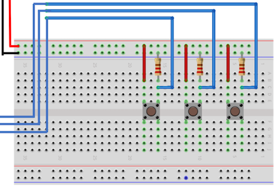

Update 1 (3/6/2022): Add texts to list the compared signals. Update 2 (3/8/2022): Add texts to explain the DAC/ADC operations in the same loop.
1 Prerequisites
- mbed Lab 2 Digital Input and Output
- mbed Lab 3 Analog Output
- mbed Lab 4 Analog Input
2 Submission
- Due date: noon, March 9, 2022
- Please create your own hw1 github repo.
- Please push all your codes and README to your hw1 github repo, and submit the report in pdf to eeclass.
- The Readme file should explain: (1) how to setup and run your program (2) what are the results
- The pdf is a record and explanation of your codes (don't print out codes). You may include the following contents (but not limited to): (1) implementation (data structure and algorithm) in each part (2) Results and validation of each step (3) Encountered issues (4) Discussion
- Please demo your homework and explain how it works before 6:20pm on March 9.
3 Equipment List
- B_L4S5I_IOT01A
- Bread board
- Buttons * 3
- Picoscope
- Wires * 20
- Resistor and Capacitor
4 Homework Description
In this assignment, you will need to do the following:
- (Inputs) Add buttons on the bread board (as DigitalIn): up, down and select.
- (Display) Print selection with printf and select from a few frequencies by your choice, e.g., 100Hz, 200Hz, etc.
- (Generate waveform) Use DAC to generate a wave form with the chosen frequency and pass the generated signal through a RC low pass filter.
- (Measure) Use Picoscope to measure the generated wave form.
- (Sample) Sample the generated wave form and send the value to PC/Python.
- (Analysis) Analyze the captured waveform: show frequency response and wave on screen with Matplotlib.
Detailed parts for this homework
(Inputs) Add 3 buttons to mbed.
Plugin 3 buttons and wire to mbed:
As shown in the diagram, for each button, we connect a resistor in series with a button (the resistor is for pulldown use. Several hundreds Ohm or above will work.)
The function of the two Up and Down buttons are to display a current selection with printf
The function of the Confirm button is to confirm a selection of a frequency
Once the frequency is selected, we execute the following waveform generation without going back to selection again.
(Generate waveform) Use DAC to generate a wave form
Once user confirm the frequency selection, please generate continously a waveform with the frequency with DAC output.
The signal is also pass through a RC-based low-pass filter (https://www.electronics-tutorials.ws/filter/filter_2.html). Note that the RC selection should match the frequency range in the menu. At least one frequency choice should be at cut-off frequency (Formula is in the website above). Therefore, it is suggested that you design a RC filter first and then the frequency choices.
Waveform specification before RC fliters should follow the rules:
The waveform is a form of trapezoidal signal. The signal peaks at 3V (the reference voltage of DAC).
Each student will use LSB 2 digits of student ID to select a specific trapezoidal waveform.
Assume the LSB digits are d0 and d1, and d0<d1, and they are converted to ratios r0=d0/10 and r1=d1/10. The trapezoidal waveform start at 0V at the beginning of a period. It will grow linearly to reach peak at r0% of the period. Then it stays at peak till r1% of the period is reached. And it decreases linearly to reach 0V at the end of the period.
Please adjust the d0 and d1 according to the following conditions if necessary:
- If d0==0, d0=d0+1.
- If d0==d1, choose either d0=d0-1 or d1=d1+1.
(Measure) Picoscope.
- Please use Picoscope to measure the above waveform and confirm the frequency (both before and after the RC fliter).
(Sample) Sample the generated waveform
- Please use ADC on mbed to sample the above waveform (both before and after the RC filter).
- Send both waveform data to PC.
- It is important to note that we perform both DAC and ADC in the same loop. Therefore, they both operations will loop in the same time duration. However, in each loop we can perform more DAC or more ADC operations. For example, in the loop, we run two DAC and one ADC. Then the sample rates of DAC are twice as ADC. Note that sleep_for() should be adjusted to increase or decrease the actual sampling frequency. And the corresponding sampling frequency in FFT.py should also be changed.
(Analysis 1) Python program
Please write a Python program in PC to get the waveform values.
Plot the waveform and the FFT spectrum of the waveform in the same plot with Python in PC before and after RC filter.
One waveform result would be like this: 1hz_waveform
Your frequency response will probably not be the same as example above.
Please compare the frequency and waveform with those measured by Picoscope before and after RC filter.
(Analysis 2) Python program
- Please use Python to implement a simple digital low pass filter. Please check https://dobrian.github.io/cmp/topics/filters/lowpassfilter.html for a simple filter design.
- Please also compare the the frequency and waveform produced by your digital filter with previous results.
- In summary (Analysis 1 and 2), there are two signal points we measure with ADC (and Picoscope) on board: before and after RC filter. We can use Picoscope to verify ADC results (in Analysis 1). We will also perform a digital filter on the measured waveform before RC filter. If it works correctly with mbed ADC/Python by comparing with Picoscope, we then compare the results of Python analysis of digital filter on waveform before RC filter with waveform before RC filter and after RC filter.
{kind=link}